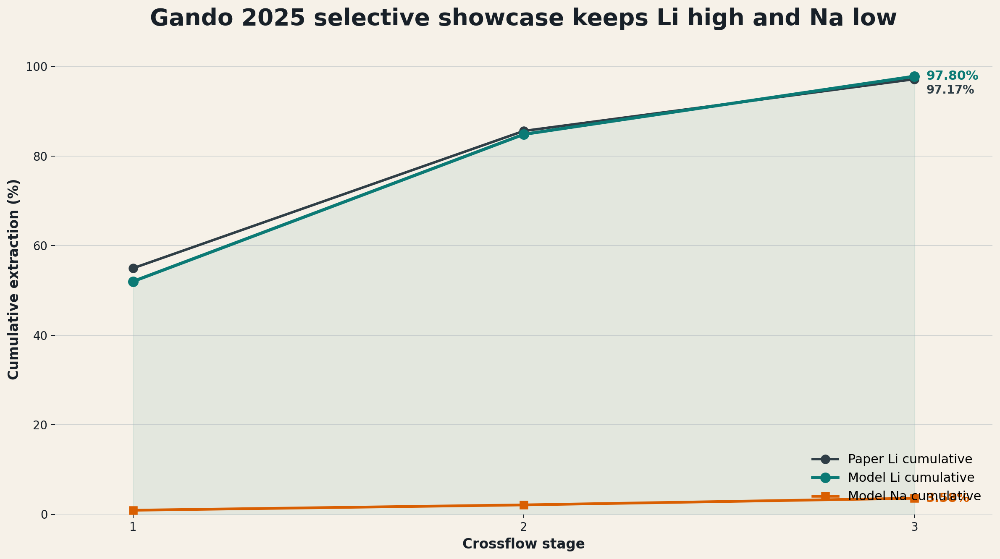

Thermodynamic and process-systems case study for HBTA/TOPO solvent extraction
2026-05-07
This deck makes one chemical-engineering argument:
Produced-water lithium extraction needs a thermodynamic model that maps basin chemistry into solvent-extraction transfer variables. The benchmark chemistry is the non-ionic HBTA/TOPO/sulfonated-kerosene system; ePC-SAFT is evaluated as the equilibrium backbone for PrOMMiS and IDAES.
| Basin | Representative lithium signal | Representative TDS signal | Why it matters |
|---|---|---|---|
| Appalachian | Marcellus subsets reach 127-205 mg/L Li |
Often >100,000 mg/L TDS |
High Li, chemically variable |
| Permian | Wolfcamp average near 14 ppm Li |
<25-140 g/L TDS range |
High water volume, lower Li grade |
| Williston | Brines can exceed 100 mg/L Li |
Bakken/Three Forks near 308 g/L TDS |
Salinity can dominate pretreatment |
| Smackover | Observed Li about 1-477 mg/L |
156,000-340,000 mg/L TDS |
Premium but thermodynamically hard |
The case study starts with basin screening because the same extraction train will not behave the same across these feeds.
Why this location makes sense
| Signal | Smackover basis |
|---|---|
| Li range | observed wells span about 1-477 mg/L |
| TDS range | observed samples span 156,000-340,000 mg/L |
| Median TDS | current observation-set median is 305,000 mg/L |
| Infrastructure | existing Arkansas bromine/brine operations |
| Case | Row | Li (mg/L) | TDS (mg/L) | Na/Ca/Mg (mg/L) | Role |
|---|---|---|---|---|---|
| Low observed | SH-2 |
11.7 |
156,000 |
37,100 / 13,900 / 2,250 |
Lower source bound |
| Base observed | MS-2 |
168 |
305,000 |
64,100 / 36,900 / 3,310 |
Median-TDS base proxy |
| High observed | BR-2 |
252 |
340,000 |
70,800 / 39,900 / 3,130 |
High-TDS/high-Li proxy |
These are source rows from the USGS southern-Arkansas Smackover data release after duplicate and blank rows are excluded. The separate 100/200/400 mg/L Li rows are sensitivity cases, not direct well samples.
| Field | Value |
|---|---|
| Source row | MS-2 / MSPU 4-W1 |
| Formation | Smackover |
| Li | 168 mg/L |
| TDS | 305,000 mg/L |
| Na / Ca / Mg | 64,100 / 36,900 / 3,310 mg/L |
| Cl / Br | 174,000 / 2,700 mg/L |
The feed is Smackover-specific. The extraction chemistry is Shan/Gando HBTA/TOPO. The model couples a source-backed brine to a literature-backed non-ionic extraction chemistry without claiming a fully calibrated Arkansas extraction experiment.
| Group | What the Smackover source table supports | How to present it |
|---|---|---|
| Reported trace fields | Fe, Mn, Zn, Al, As, Be, Cd, Co, Cu, Cr, Hg, Mo, Ni, Pb, U, V | Use as trace/pretreatment context, with censoring caveats |
| REE | not_reported in the source table |
Do not infer; make this a future-data need |
| Axis | Why it matters | Process consequence |
|---|---|---|
| Li concentration | Sets value and concentration driving force | Changes recovery target and stage count |
| TDS / NaCl load | Changes ionic strength and activity behavior | Moves distribution behavior and surrogate validity |
| Competing ions | Mg, Ca, Sr, Ba, and Na affect selectivity | Changes pretreatment and solvent burden |
| Solvent / extractant chemistry | Determines whether selective transfer is plausible | Changes (D_i), selectivity, and loaded-solvent composition |
| O/A ratio | Directly affects stage transfer | Becomes a design and optimization variable |
What weak placeholders can do
What they cannot defend
The process model needs a physical equilibrium layer before the surrogate or optimizer is meaningful.
| Modeling need | ePC-SAFT contribution | Why it is novel for this case |
|---|---|---|
| Hypersaline brine | Electrolyte activity and phase-equilibrium structure | Salinity becomes a modeled variable, not a correction factor |
| Aqueous/organic split | Phase compositions and phase fractions | The extraction stage gets a thermodynamic target |
| Ion partitioning | Distribution ratios and selectivity metrics | Li movement can be separated from bulk salt movement |
| Sensitivity surfaces | Response to TDS, O/A, solvent, and feed composition | Surrogates can be trained inside a meaningful region |
| Diagnostics | Stability, convergence, and phase-distance checks | Failed or collapsed points do not silently become process data |
| What Rezaee gives | How this deck should use it |
|---|---|
| DES/TOPO lithium extraction modeling with tabulated PC-SAFT-style parameters | Package regression and equilibrium smoke test |
| Organic phase modeled with PC-SAFT | Do not cite as full ePC-SAFT organic-phase closure |
| Aqueous electrolyte phase modeled with ePC-SAFT | Useful support for the aqueous-brine side of the bridge |
| Fitted organic interactions and product pseudo-species | Useful parameterization pattern, not Shan/Gando chemistry |
Rezaee is a method lead and runtime test, not the final HBTA/TOPO model.
| Priority | System | Role | Status |
|---|---|---|---|
| 1 | HBTA + TOPO + sulfonated kerosene | Flagship | Field-water evidence, source-regressed Li/Na stage model, missing full multication parameter payload |
| 2 | D2EHDTPA + BuPhen + octanol + n-dodecane | Best non-HBTA backup | Strong multication selectivity, blocked by missing parameter set |
| 3 | TBAC + decanoic-acid DES + TOPO | Parameter-regression pilot | Rezaee smoke test runs; not the flagship chemistry |
| 4 | TBP + FeCl3/HCl | Mechanistic backup | Useful high-Mg comparison, process-burden and parameter gaps |
Placeholder limitation
39.96% cumulative Li extraction after ten contacts.38.05% cumulative extraction in that same chain.Why it was not enough
MS-2 O/A = 1 stage result
47.2846%0.0131%88.56 mg/LSource-regressed Li/Na stage solve; not a full multication reactive LLE flash.
What changed from the old wrapper
2 HBTA : 1 TOPO : 1 Li complex stoichiometry.| Anchor | Zotero key | Target | Prediction | Residual |
|---|---|---|---|---|
| Stage 1 Li cumulative extraction | JUNBXVTI |
54.95% |
54.8882% |
-0.0618 pp |
| Stage 2 Li cumulative extraction | JUNBXVTI |
85.60% |
85.7224% |
+0.1224 pp |
| Stage 3 Li cumulative extraction | JUNBXVTI |
97.17% |
97.0385% |
-0.1315 pp |
| Li/Na selectivity lower-bound anchor | 9LJWDC7E |
2100 |
2100.008 |
+0.008 |
This is the current predictive closure: Li/Na staged transfer from one source-regressed parameter payload. Ca, Mg, Ba, Sr, diluent, and complex parameters remain explicit limits.

Three-stage reactive-stage chain
47.2846%89.5753%0.1160%97.17% literature anchorThe old question
Can this solvent extract lithium from this brine?
The stronger question
Where should this chemistry work, how does the answer change with basin chemistry, and what stage variables should enter a process model?
Why ePC-SAFT changes the question
| Process-model need | ePC-SAFT-derived quantity | Use in PrOMMiS / IDAES |
|---|---|---|
| Feed state | (z_i), TDS, Li/Na/Mg/Ca/Sr/Ba/Cl basis, temperature | Basin-specific solvent-extraction inlet |
| Phase split | aqueous and organic compositions, phase fraction | Equilibrium target or closure for a stage |
| Transfer strength | (D_i = C_{i,org}/C_{i,aq}) | Distribution behavior in material balances |
| Selectivity | (S_{Li/Na}), later (S_{Li/Mg}), (S_{Li/Ca}) | Separation constraints and solvent screening |
PrOMMiS and IDAES do not just need a lithium recovery number. They need a defensible map from produced-water chemistry to stage transfer variables.
For process integration, the ePC-SAFT output should be treated as the following structured contract:
| Variable | Definition | Why PrOMMiS / IDAES needs it |
|---|---|---|
| (_i) | stage removal (= (C_{i,in} - C_{i,out}) / C_{i,in}) | Links chemistry to process-wide recovery objectives |
| (D_i) | (C_{i,org} / C_{i,aq}) | Controls staged transfer in material balance equations |
| (S_{Li/Na}), (S_{Li/Mg}), (S_{Li/Ca}) | Selectivity ratios from stage/phase outputs | Enables solvent and design comparison without refitting fixed coefficients |
| Validity flags | residuals, phase flags, domain bounds | Prevents brittle points from entering surrogate or optimizer datasets |
This keeps the story concrete: ePC-SAFT computes the transfer map; PrOMMiS/IDAES consumes it.
1. Offline engine Run ePC-SAFT outside the flowsheet to generate equilibrium tables over feed chemistry, O/A ratio, and solvent conditions.
2. Surrogate layer Fit ALAMO or another surrogate inside a documented trust region so optimization is fast and bounded.
3. External function Expose high-fidelity calls for studies where direct thermodynamic solves are worth the cost.
4. Process model Use PrOMMiS/IDAES for staged extraction, recycle, stripping, costing hooks, and optimization.
| Costing block | Current basis | Needed before formal TEA |
|---|---|---|
| Feed and annual basis | Smackover base feed; 100/1000/10000 m3/day scenarios |
approved flowrate and uptime |
| Pretreatment | IDAES/Pyomo scenario expression from model inputs | removal target, reagent use, waste handling |
| Extraction/contacting | three-stage HBTA/TOPO reactive-stage solve | contactor sizing, residence time, solvent inventory |
| Solvent makeup/loss | low/base/high placeholder per m3 feed | HBTA/TOPO/diluent prices and loss rate |
| Concentration and Li2CO3 precipitation | product-purity anchor 99.28%; recovery capped at 97.17% |
evaporation duty, carbonate reagent, product spec |
The formal IDAES/Pyomo layer computes production, revenue, annual operating cost, annualized contactor CAPEX, breakeven Li2CO3 price, and net-before-tax scenario values.
Add ePC-SAFT as the thermodynamic backbone
Use PrOMMiS/IDAES for the process system
The sell is simple: ePC-SAFT supplies the equilibrium evidence; PrOMMiS/IDAES turns that evidence into a process model.
| Priority | Work item | Why it matters |
|---|---|---|
| 1 | Extract Zhang 2017 distribution, O/A, temperature, and capacity data | Improves identifiability of the Li/Na transfer law |
| 2 | Add explicit HBTA, TOPO, diluent, and Li-complex parameter regression | Moves from source-regressed transfer to reactive ePC-SAFT closure |
| 3 | Build a PrOMMiS MSContactor validation case | Tests convergence and material-balance consistency under staged operation |
| 4 | Replace Class-5 costing assumptions with engineering ranges | Improves economic credibility before TEA-style interpretation |
Lithium Extraction with ePC-SAFT